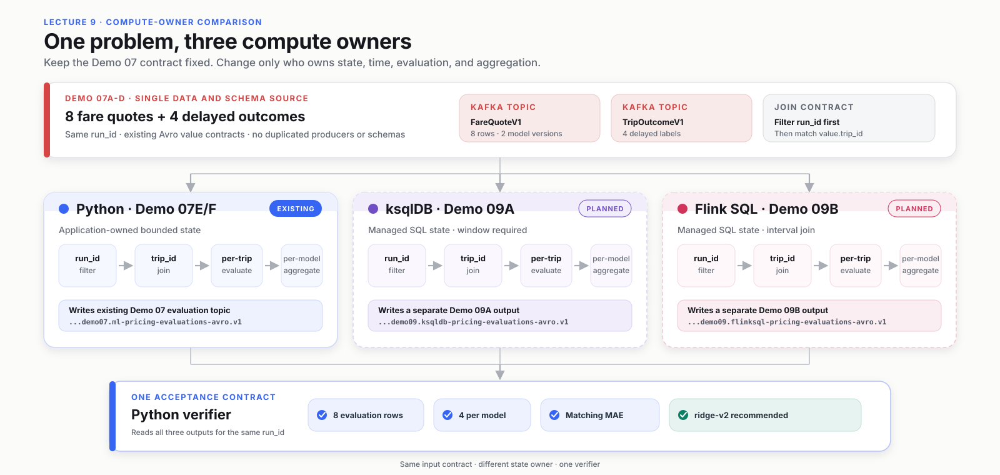
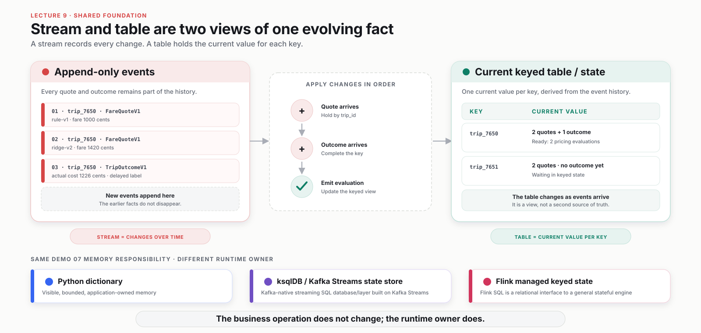
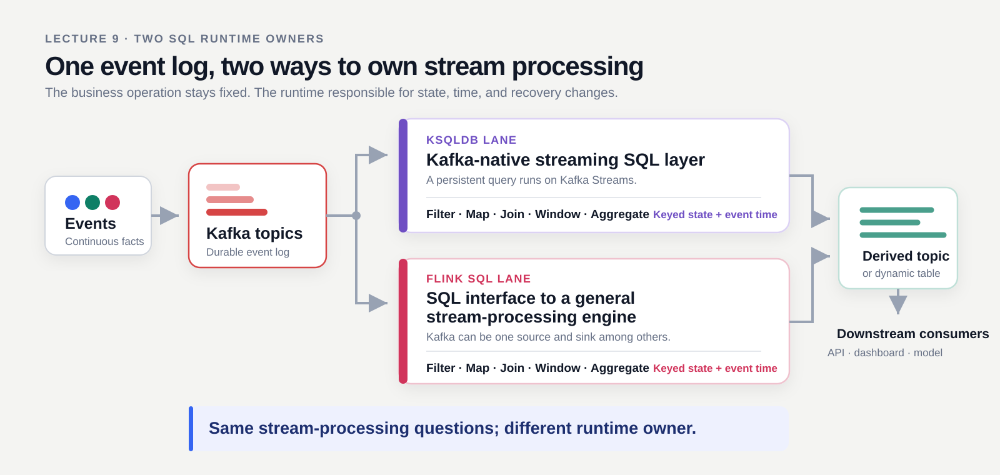
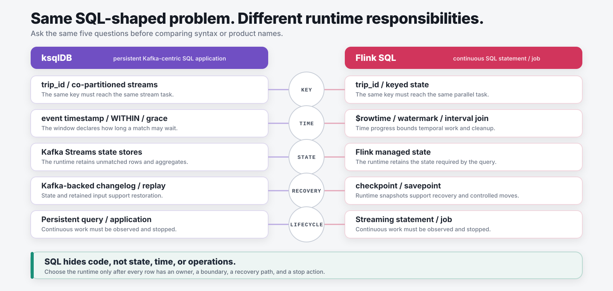
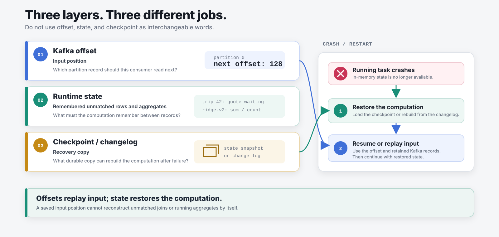
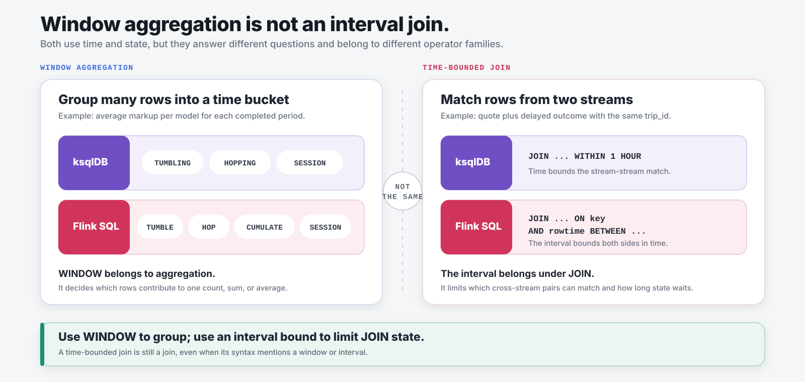

Consume, validate, compute, publish, acknowledge, then commit.
MSDS 682 · Lecture 9
Keep Demo 07’s data and business contract fixed. Compare how Python, ksqlDB, and Flink SQL own the same delayed join and model evaluation.
Review 1 of 4 · Lectures 6 to 8
Consume, validate, compute, publish, acknowledge, then commit.
Join quotes with delayed outcomes and evaluate both pricing versions.
Start from the operation, state, time, recovery, and operating contract.
Course sources: Lecture 6 · Lecture 7B · Lecture 8 three-part index
Review 2 of 4 · Lecture 6
Filter or map can decide from the current record alone.
A join must remember unmatched records; recovery now includes state.
Course-verified: Lecture 6 safe-processing boundary, delivery semantics, and stateless/stateful distinction.
Review 3 of 4 · Lecture 7B result
Rank each model by the mean of each trip’s absolute distance from the 20% target.
Average gap to target. Average markup was −3.8%; two of four trips were priced below cost.
Average gap to target. Average markup was +20.6%; this run recommends ridge-v2.
AVG(ABS(realized_markup_pct − target_markup_pct)).
The absolute value is applied per trip before averaging.
Course-verified snapshot: run_id=model-compare, deterministic fixture, seed offset 65, four trips. This is a classroom ranking, not a production A/B test.
Review 4 of 4 · Lecture 8
Scope one closed loop: source, Kafka, processor/state, output, and evidence.
S3, Kafka events, versioned knowledge, authorized RAG, and MCP form a different end-to-end case.
The short compute-owner comparison was prepared, but it was not taught on July 30.
Course-verified: Lecture 8 transcript/board review and the Lecture 8 three-part index.
Current status · August 3, 2026
The slides show the intended statement shape and acceptance contract. Demo implementation, live schema inspection, and cloud execution still require verification.





P0 comparison · Keep only the semantic traps
| Question | ksqlDB | Flink SQL |
|---|---|---|
| What is a table? | A keyed table backed by a Kafka topic | A logical dynamic table; Cloud maps Kafka topics to tables |
| What is a change? | A Kafka record updates the keyed result | An internal row kind: +I / -U / +U / -D |
How does GROUP BY update? | Materialized keyed/upsert result | Updating table; may upsert or retract, depending on key and sink |
| How is a join time-bounded? | WITHIN plus grace | Equality key plus rowtime bounds and watermarks |
-U appears only when the changelog must retract an old value. An upsert-capable keyed sink may use +U without -U.Official concepts: ksqlDB topic-backed tables · Flink dynamic tables and changelog modes.
ksqlDB · 1 of 6 · Three core concepts
A Kafka-native streaming SQL database and runtime built on Kafka Streams.
STREAM or TABLEHistory or current keyed valueEMIT CHANGES subscribes; pull reads nowOfficial sources: stream/table concepts · query types · engine, server, and generated Kafka Streams application.
ksqlDB · 2 of 6 · Planned Demo 09A
msds682.demo07.ml-fare-quotes-avro.v1msds682.demo07.ml-trip-outcomes-avro.v1msds682.demo09.ksqldb-pricing-evaluations-avro.v1trip_idThe business key is present in both Avro values; repartition the filtered streams by that field.ksqlDB · 3 of 6 · Platform constraint
run_idExclude retained records from other runstrip_idCo-partition both streamsWITHIN 1 HOURGrace defines late-arrival policyWITHIN and grace answer “how long state waits.”Official source: ksqlDB joins, windows, grace, and co-partitioning.
ksqlDB · 4 of 6 · Planned SQL shape
-- In the Confluent Cloud UI, source streams point at:
-- msds682.demo07.ml-fare-quotes-avro.v1
-- msds682.demo07.ml-trip-outcomes-avro.v1
CREATE STREAM quotes_run AS
SELECT * FROM fare_quotes
WHERE run_id = 'model-compare'
PARTITION BY trip_id
EMIT CHANGES;
CREATE STREAM outcomes_run AS
SELECT * FROM trip_outcomes
WHERE run_id = 'model-compare'
PARTITION BY trip_id
EMIT CHANGES;ksqlDB · 5 of 6 · Planned SQL shape
-- Sink topic: msds682.demo09.ksqldb-pricing-evaluations-avro.v1
CREATE STREAM evaluations_09a AS
SELECT q.run_id, q.trip_id, q.quote_id, q.model_version,
100.0 * (q.fare_cents - o.actual_cost_cents)
/ o.actual_cost_cents AS realized_markup_pct,
ABS(100.0 * (q.fare_cents - o.actual_cost_cents)
/ o.actual_cost_cents - q.target_markup_pct)
AS absolute_markup_error_pp
FROM quotes_run q
JOIN outcomes_run o WITHIN 1 HOUR
ON q.trip_id = o.trip_id
EMIT CHANGES;
SELECT model_version, COUNT(*) AS n,
AVG(absolute_markup_error_pp) AS mae_pp
FROM evaluations_09a
GROUP BY model_version EMIT CHANGES;4, then require the shared Python verifier to match the Lecture 7B baseline.ksqlDB · 6 of 6 · Operating boundary
A tiny input does not make the provisioned cluster free. Show cleanup as part of correctness.
The expression is small; provisioning, credentials, persistent queries, and cleanup are the operational lesson.
Official source: Confluent Cloud ksqlDB pricing and cluster limits. Recheck console pricing before class.
Flink SQL · 1 of 6 · Four core concepts
Flink SQL is the relational interface to Apache Flink’s distributed stateful engine.
GROUP BYThe runtime maintains stateOfficial sources: dynamic tables and changelogs · event time and watermarks · checkpoints versus savepoints.
Flink SQL · 2 of 6 · Confluent Cloud mapping
trip_id from the Avro value.$rowtime in the live workspace.Official sources: tables and topics · managed table inference.

Flink SQL · 4 of 6 · Planned Demo 09B
WITH quotes_run AS (
SELECT * FROM `msds682.demo07.ml-fare-quotes-avro.v1`
WHERE run_id = 'model-compare'
), outcomes_run AS (
SELECT * FROM `msds682.demo07.ml-trip-outcomes-avro.v1`
WHERE run_id = 'model-compare'
)
SELECT q.run_id, q.trip_id, q.quote_id, q.model_version,
100.0 * (q.fare_cents - o.actual_cost_cents)
/ o.actual_cost_cents AS realized_markup_pct
FROM quotes_run q
JOIN outcomes_run o
ON q.trip_id = o.trip_id
AND q.$rowtime BETWEEN o.$rowtime - INTERVAL '1' HOUR
AND o.$rowtime + INTERVAL '1' HOUR;msds682.demo09.flinksql-pricing-evaluations-avro.v1.Flink SQL · 5 of 6 · Result semantics
One quote plus one outcome produces one realized markup and one absolute gap.
GROUP BY model_version updates count and MAE as evaluations arrive.
SELECT model_version,
COUNT(*) AS evaluation_count,
AVG(ABS(realized_markup_pct - target_markup_pct)) AS mae_pp
FROM evaluations_09b
GROUP BY model_version;4, then require the shared Python verifier to match the Lecture 7B baseline.Official source: Flink SQL runtime: stateful aggregation and updating streams.
Flink SQL · 6 of 6 · Operating boundary
Statements share a regional pool. With no running statements, the pool scales down to zero.
A continuous statement keeps using runtime. Stop it when the classroom evidence is complete.
Official sources: compute pools · Flink billing.
Synthesis · Make a requirement-driven choice
| Requirement | ksqlDB is the simpler fit when… | Flink SQL is the stronger fit when… |
|---|---|---|
| Data boundary | The sources and sinks are Kafka topics | The job must cross Kafka, databases, or lake systems |
| Time contract | Windows and WITHIN express the requirement | Watermarks and richer event-time control are central |
| Operating model | A dedicated Kafka-native SQL application fits the team | A general engine and shared compute pool fit the platform |
| Proof | It passes the same independent verifier | It passes the same independent verifier |
Lecture 9 close · Lecture 10 continues the same case
Built August 3, 2026 from the verified Lecture 6–8 course pages, Demo 07 contracts, the supplied Flink SQL transcript, and current Confluent documentation. Recheck live cloud state before teaching.